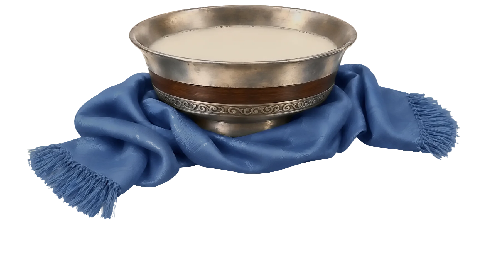

Алтангадас заргачийн охин Мөрөнгуа, Боржигон овогтон
Товчоор
- Төрөл
- Product Designer
- Туршлага
- +2 жил
- Салбар
- Fintech, creative industries
* Нэрийг хуучны ёсоор бичив: эцгийн нэр ба мэргэжил, өөрийн нэр, овог. Эцэг Алтангадас хуульч — эрт цагт заргач гэдэг байв. Гэрэгэ нь Их Монгол Улсын үед элч, түшмэдэд олгодог байсан эрх мэдлийн пайз.
Experience
2024.08 — 2024.10
MOT Forex LLC
Rebranding and visual identity support. Product design for internal platforms.
My Work
ᠤᠬᠠᠭᠠᠨ ᠪᠣᠳᠣᠯ ᠨᠢ ᠤᠨᠳᠤᠷᠭᠠ ᠰᠢᠭ ᠤᠨᠳᠤᠷᠠᠵᠦ᠂ ᠤᠷᠠᠨ ᠪᠦᠲᠦᠭᠡᠯ ᠨᠢ ᠠᠭᠤᠯᠠ ᠰᠢᠭ ᠰᠦᠨᠳᠡᠷᠯᠡᠭᠡᠢ᠃
Recent work
Four case studies, the newest first.
UI & visual design
Voice mini app
A play-along companion for The Voice Mongolia, inside its broadcast brand.

Product design
HUB
Safety checks for a transport fleet, moved from paper onto phones.
First UI/UX project
How I Work

- BriefMe · Саах — What it is for, and who it is for. Written down, so it can be argued with.
- ResearchAI · Хөрөнгө — Competitors, conventions and the people who will use it, run through a master prompt I keep from the last batch and tune every time.
- Flows & codeAI · Бүлэх — Userflows, wireframes and the first code, in the team’s own structure. Thousands of strokes, none of them decisions.
- DesignMe · Тохируулах — Type, colour, spacing and every state, settled by hand in Figma until nothing is left to guess.
- CheckMe · Амсах — Tested with real people before the build, and checked against the real build after it. Only a person decides when it is ready.
- ReleaseMe · Барих — Handed over on a khadag: a flow developers can build without asking, and a designer who stands behind it.
AI does the churning. I decide when it’s ready.